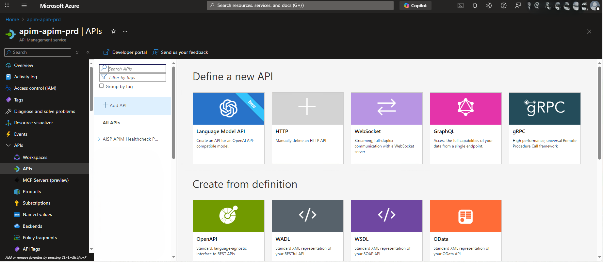

This project delivers a production-grade Azure API Management (APIM) platform with
fully automated
infrastructure and API deployments. Responsibilities ranged from infrastructure as code and
policy management to network security, monitoring, and
troubleshooting of live APIs.

Key Contributions
- Infrastructure as Code: Designed APIM
instances, Products, backends, log integrations, and API artifacts with
Terraform (modules & workspaces).
- CI/CD Pipelines: Built Azure
DevOps pipelines to validate/plan/apply Terraform and deploy API revisions/versions
from source.
- Policy Governance: Auth, rate-limiting,
header transforms, CORS, caching, JWT validation, IP filtering—managed via reusable policy
templates.
- Networking: Managed
VNET-injected APIM within subnets, with route tables,
NSGs, and Application Gateway/WAF in front.
- Key Vault Integration: Centralized secrets,
certificates, and named values; automated rotation and binding to APIM & gateway.
- Monitoring & KQL: Hooked APIM to
Log Analytics/App Insights; authored KQL dashboards for
latency, failures, and policy effects.
- Troubleshooting: Resolved TLS/cert
issues, backend connectivity, 500 errors, and policy misconfigurations with structured runbooks.
Technical Specifications
- IaC: Terraform modules for APIM, Application
Gateway, diagnostics, role assignments, and networking.
- Pipelines: Multi-stage Azure DevOps (PR → Test →
Prod) with approvals, artifacts, and release gates.
- APIM Artifacts: APIs, Revisions, Versions,
Products, Backends, Named Values, Policy fragments.
- Networking: VNET/Subnet design, UDR route
tables, NSGs, Private DNS, WAF policies on App Gateway.
- Quality: Linting & validation for Terraform, unit
checks for policies, smoke tests against API revisions.
What I Managed Day-to-Day
- Routing & Security: Ensured correct egress/ingress
via UDRs; locked down subnets with NSGs; maintained WAF rules.
- Secrets & Certificates: Created/rotated Key
Vault secrets; bound TLS certs to custom domains and backends.
- Policies at Scale: Applied
inbound/outbound/Backend policies by environment through parameterized fragments.
- Diagnostics: Investigated failures using KQL,
APIM trace, and App Gateway access logs.
- Safe Releases: Used revisions +
canary routing before promoting to a new version.
Troubleshooting Scenarios Solved
- TLS / Certificate Chain: Missing intermediates &
expired certs—fixed via proper chain upload & auto-rotation from Key Vault.
- 500s from Backends: Identified
policy-induced header issues, auth token mismatches, and timeouts; added retries/circuit
breakers.
- Routing Anomalies: Corrected UDR next hops and
NSG rules to restore private connectivity.
- CORS & Auth: Unified CORS in policies; standardized
OAuth/JWT validation and audience/issuer checks.
Monitoring & Observability
- Dashboards: Requests, latency, 4xx/5xx, cache
hit ratio, throttling events, and backend dependency health.
- Logging: Centralized APIM & App Gateway logs to
Log Analytics; linked to alerts and action groups.
- Alerts: SLO-based thresholds (p95 latency, error
rate) with on-call routing.
Impact
- Faster Delivery: Reproducible environments and
one-click pipeline releases.
- Better Security: Private networking, WAF,
and policy standardization.
- Higher Reliability: Proactive alerts and
data-driven troubleshooting reduced MTTR.